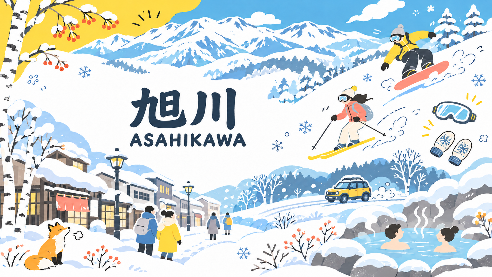

目前位置的天氣與道路摘要允許定位後，可查看目前位置的即時天氣；道路資訊會整理為旭川地區摘要。
天氣—
氣溫／體感—
風速／陣風—
降水／降雪—
旭川地區道路摘要・讀取中正在讀取由 GitHub Actions 定時更新的官方道路管制資料。查看國土交通省官方完整地圖
位置只用於本次查詢，不會儲存在網站。定位功能需使用 HTTPS 網址並由瀏覽器授權。
將地點儲存到你的收藏，加入行程標籤，或建立自己的地點卡片。資料保存在目前瀏覽器。
旭川與近郊地點
滑雪場卡片的天氣與氣溫為天氣模型資料，積雪深度為模型估算，非滑雪場現場實測；頁面開啟期間每 30 分鐘更新。資料來源：Open-Meteo。食べログ分數會更新，點擊分數可查看店家頁面。MapCode 依目前行程資料整理；若地圖搜尋結果不符，請以目的地名稱與地址核對。